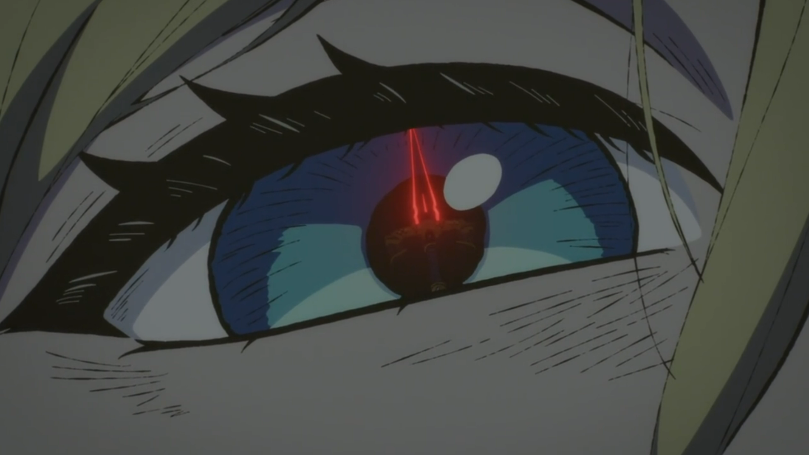

UNIT DOSSIER
18 msPing 応答
37%Load 負荷
52°Temp 温度
12dUptime 稼働
Agent bridgehealthy
Open WebUI:8080
Backup workeridle

PRIZE OPERATOR
APPEARANCE LAB
These switches mimic ctrl-b’s existing motion and performance axes.
Reduced motion removes spatial morphs and ambient loops while preserving immediate state changes. Lite effects keep the shape language but disable filtered goo, particles and heavy blur.